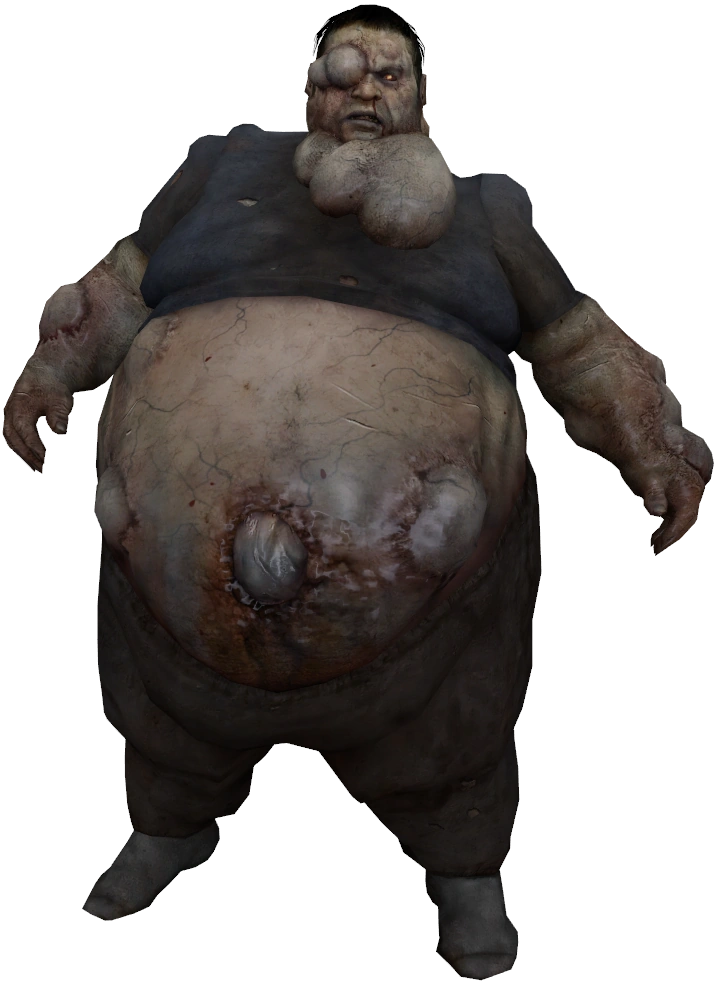
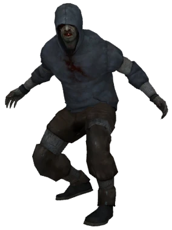
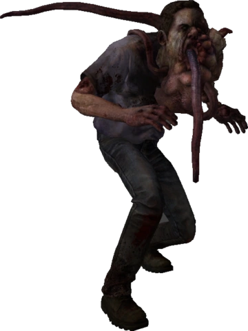
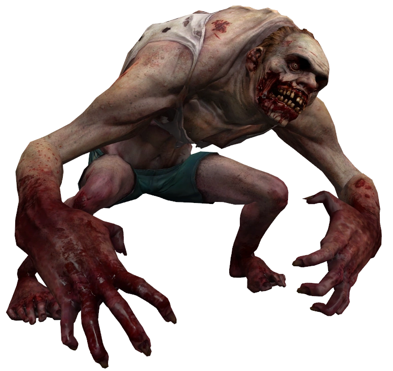
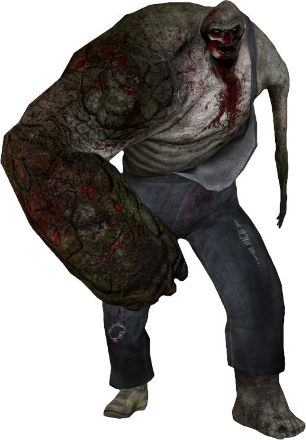
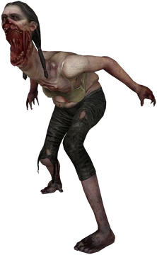
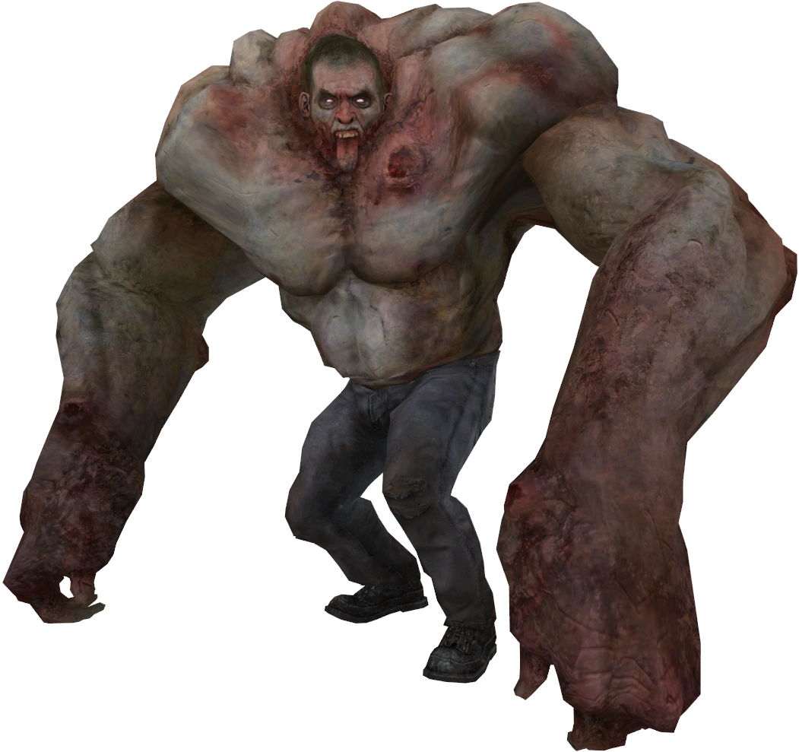
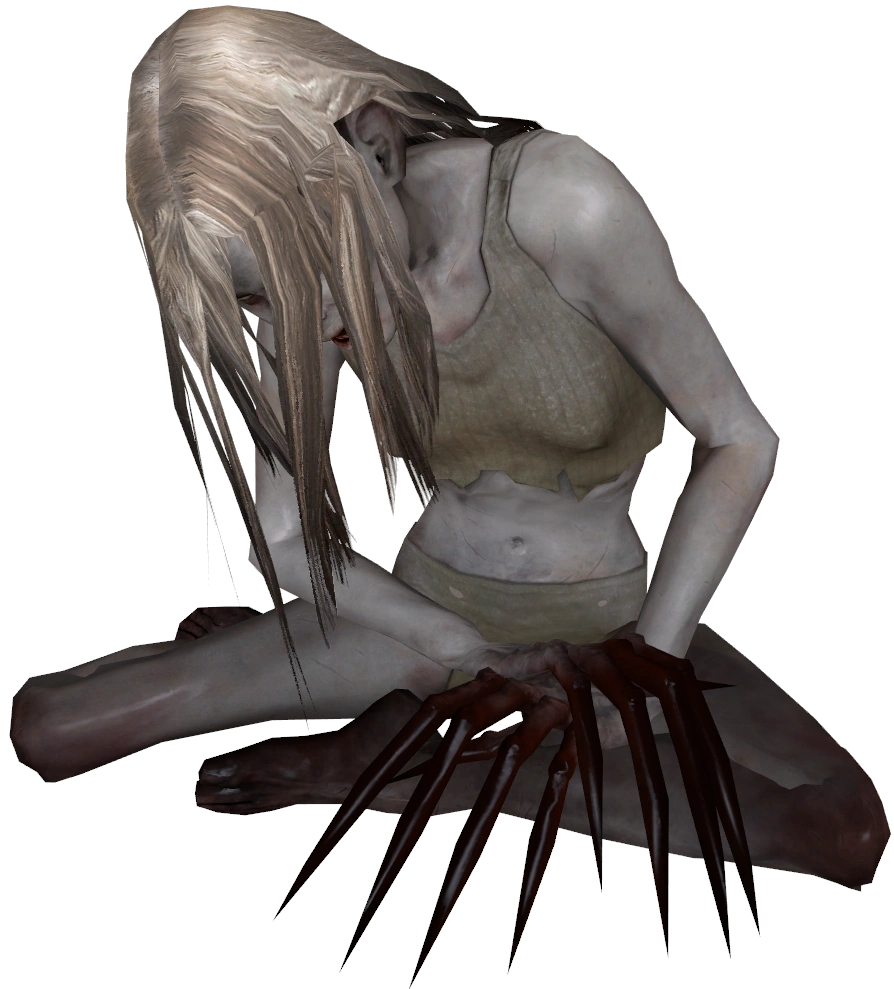

Infectados Especiales
Los Infectados Especiales son la principal amenaza táctica orquestada por el AI Director. A diferencia de los zombis comunes, estas criaturas han sufrido mutaciones extremas debido a la Gripe Verde, desarrollando habilidades letales diseñadas específicamente para separar, incapacitar o aniquilar a los supervivientes. Trabajar en equipo es la única manera de sobrevivir a sus ataques combinados.

Boomer
Lore y Teorías: Se cree que los Boomers eran personas con obesidad mórbida antes de la infección. El virus mutó drásticamente su tracto digestivo, obligando a sus cuerpos a producir cantidades masivas de bilis altamente volátil. Su piel está estirada al máximo y llena de pústulas purulentas a punto de reventar.
Mecánicas: El Boomer es un infectado de apoyo. Su ataque principal consiste en vomitar bilis sobre los supervivientes, lo cual los ciega temporalmente y atrae instantáneamente a una horda de zombis comunes hacia los afectados. Además, tiene muy poca salud; al morir, explota cubriendo de bilis a cualquiera que esté demasiado cerca.

| Curiosidades: Boomer | Detalle |
|---|---|
| Sonido Delator | Se le puede escuchar desde lejos debido a sus constantes eructos y quejidos burbujeantes. |
| Empujón Vital | Es fundamental empujarlo (golpe melee) antes de dispararle para evitar que su explosión te manche. |
Hunter
Lore y Teorías: La teoría más aceptada es que los Hunters eran practicantes de parkour, acróbatas o atletas. La Gripe Verde fortaleció de forma antinatural los músculos de sus piernas, permitiéndoles dar saltos inhumanos. Para ocultarse, visten sudaderas oscuras con capucha y se desplazan a cuatro patas como depredadores salvajes.
Mecánicas: Es un atacante ágil que se abalanza desde grandes distancias. Cuando atrapa a un superviviente, lo inmoviliza contra el suelo y comienza a desgarrarle el abdomen, causando daño continuo. La víctima queda totalmente indefensa hasta que un compañero mate al Hunter o lo empuje.

| Curiosidades: Hunter | Detalle |
|---|---|
| Daño por Caída (Pounce) | Si un jugador (en modo Versus) salta desde un lugar muy alto y acierta a un superviviente, puede hacer hasta 25 puntos de daño extra solo por el impacto. |
| Silencioso al acecho | A diferencia del resto, el Hunter no hace ruidos fuertes al caminar, solo emite gruñidos agudos cuando se prepara para saltar. |
Smoker
Lore y Teorías: Fiel a su nombre, se especula que los Smokers eran fumadores empedernidos o personas con cáncer de pulmón. El virus reaccionó violentamente en sus vías respiratorias, desarrollando múltiples tumores y una lengua kilométrica similar a un tentáculo. Su constante tos delata el dolor de sus pulmones destrozados.
Mecánicas: Actúa como un francotirador. Dispara su larga lengua desde tejados o ventanas para atrapar a un superviviente, arrastrándolo hacia él para asfixiarlo o inmovilizarlo, dejándolo a merced de la horda. Al morir, libera una densa nube de humo tóxico que nubla la visión de los jugadores y hace toser a los personajes.

| Curiosidades: Smoker | Detalle |
|---|---|
| Corte Rápido | Si portas un arma cuerpo a cuerpo afilada, tienes un margen de medio segundo para cortar la lengua del Smoker justo cuando te atrapa. |
| Efectos Particulares | Es el único infectado cuyo cuerpo continúa teniendo espasmos y moviéndose de forma perturbadora varios segundos después de muerto. |
Jockey
Lore y Teorías: La comunidad teoriza que los Jockeys padecían de cifosis (joroba), esquizofrenia o condiciones neurológicas severas. El virus atacó directamente su sistema nervioso, convirtiéndolos en criaturas hiperactivas y maníacas que ríen histéricamente mientras corren encorvados.
Mecánicas: Su objetivo es saltar sobre la cabeza de un superviviente y "montarlo". Una vez arriba, el Jockey puede desviar el movimiento de la víctima, arrastrándola hacia peligros ambientales como fuego, ácido de Spitter, Witches o precipicios. Mientras lo controla, la víctima sufre daño constante.

| Curiosidades: Jockey | Detalle |
|---|---|
| Hitbox Complicada | Debido a su postura encorvada y sus saltos erráticos, es considerado uno de los infectados más difíciles de acertarle un tiro en la cabeza. |
| Lucha de Voluntades | El jugador atrapado por el Jockey puede resistirse moviendo el ratón o joystick en dirección contraria para ralentizar el secuestro. |
Charger
Lore y Teorías: La disparidad de sus brazos (uno gigantesco y otro atrófico) ha generado la teoría jocosa en la comunidad de que era alguien que practicaba el autoerotismo en exceso. Sin embargo, la teoría seria indica que era un granjero, herrero o trabajador manual asimétrico cuyo brazo dominante fue hipertrofiado monstruosamente por la Gripe Verde.
Mecánicas: Su función principal es romper formaciones. El Charger embiste en línea recta a gran velocidad, derribando como bolos a cualquiera que se cruce en su camino. Atrapa a un superviviente en el impacto inicial, llevándoselo por delante hasta chocar contra una pared para luego azotarlo brutalmente contra el suelo de manera repetida.

| Curiosidades: Charger | Detalle |
|---|---|
| Inmunidad al Empuje | A diferencia del Hunter o Jockey, el Charger no puede ser empujado con el botón de melee bajo ninguna circunstancia. |
| Daño de Impacto (Instakill) | Si un Charger embiste a un jugador hacia una zona fuera del mapa (como una ventana alta o el mar), la muerte es instantánea. |
Spitter
Lore y Teorías: Visualmente, su estómago distendido sugiere que la víctima estaba embarazada cuando se infectó, o bien sufría de úlceras y reflujo gástrico extremo. El virus disolvió sus órganos internos, convirtiendo su estómago en una bio-fábrica de ácido corrosivo que constantemente babea y le quema las mandíbulas.
Mecánicas: La Spitter escupe una bola de ácido estomacal a larga distancia. Al impactar, el ácido se esparce en un gran charco verde. Cualquier superviviente que pise el charco sufrirá daño masivo que incrementa cada segundo. Es ideal para obligar a los jugadores a salir de las esquinas seguras. Al morir, deja un charco de ácido más pequeño a sus pies.

| Curiosidades: Spitter | Detalle |
|---|---|
| Sinergia Destructiva | El combo más mortífero en modo Versus es el de un Smoker, Hunter o Charger inmovilizando a alguien justo dentro del ácido de una Spitter. |
| Destrucción de Recursos | Su ácido tiene la capacidad de prender y destruir galones de gasolina que estén abandonados en el suelo. |
Tank
Lore y Teorías: Los Tanks eran fisicoculturistas, deportistas de élite o usuarios de esteroides que tenían gran masa muscular. La Gripe Verde reaccionó a estas sustancias mutando el cuerpo hasta dimensiones titánicas, rompiendo la piel del sujeto y llenándolo de una rabia incontrolable. Es la máxima expresión de fuerza de la infección.
Mecánicas: El Tank es el "jefe" del juego. Posee una cantidad de vida absurda y su ataque principal es un puñetazo que manda a volar a los supervivientes, incapacitándolos rápidamente. También puede arrancar trozos de escombros de la tierra para lanzarlos a largas distancias, y tiene la capacidad de golpear objetos pesados (autos, contenedores) para aplastar a los jugadores.

| Curiosidades: Tank | Detalle |
|---|---|
| Música Temática | Tiene su propio tema musical ("Taank" o "Midnight Tank") que suena advirtiendo a los jugadores segundos antes de que aparezca en pantalla. |
| Debilidad al Fuego | Su mayor debilidad es el fuego (molotovs); al quemarse, su velocidad disminuye ligeramente y pierde salud gradualmente hasta morir. |
Witch
Lore y Teorías: Las Witches suelen ser mujeres jóvenes que sufrieron de depresión profunda, anorexia o desórdenes alimenticios. La mutación no altera tanto su físico, pero hiper-sensibiliza su sistema nervioso. La luz brillante y los ruidos fuertes le causan un dolor insoportable, de ahí que se la pase llorando desconsoladamente en rincones oscuros.
Mecánicas: La Witch es un infectado neutral que no ataca a menos que sea provocada. Se le altera apuntándole con linternas, acercándose demasiado o disparándole. Una vez alterada, perseguirá implacablemente al jugador que la asustó. Su ataque derriba automáticamente (o mata de un solo golpe en la dificultad Experto).

| Curiosidades: Witch | Detalle |
|---|---|
| Witches Errantes | En las campañas ambientadas de día, las Witches no están sentadas, sino que deambulan sollozando, haciéndolas más difíciles de esquivar. |
| "Crowning" (Coronación) | Es posible matarla de un solo disparo de escopeta en la cabeza o el pecho, una técnica arriesgada conocida por la comunidad como "Coronar a la Witch". |